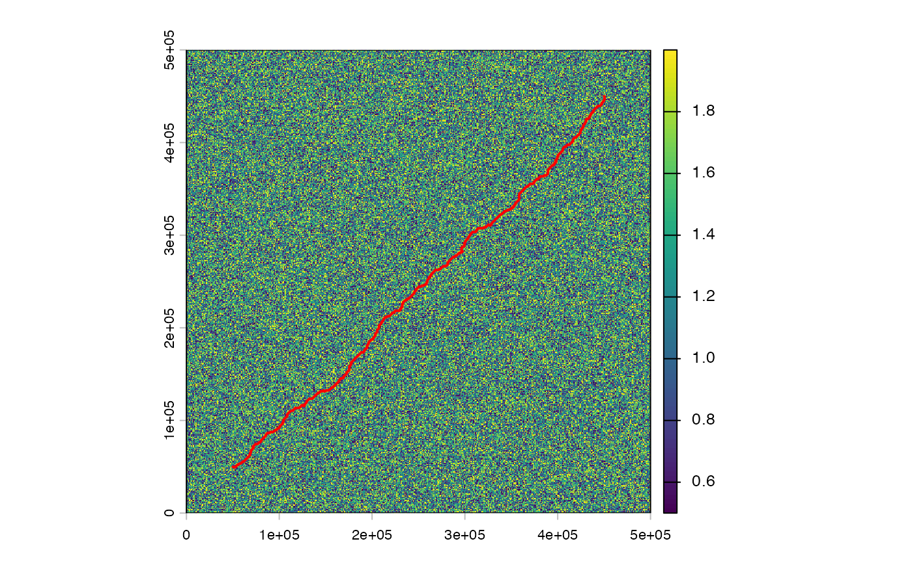

Find the minimum-cost path between an origin and destination across a raster friction surface, optionally through an ordered sequence of intermediate waypoints. The cost surface must be in a projected CRS with equal-area cells (not EPSG:4326). Cell values represent traversal friction (cost per unit distance). Higher values = more expensive. NA cells are impassable.
Arguments
- cost_surface
A terra SpatRaster (single band) or an
spopt_corridor_graphobject created bycorridor_graph. When a graph object is supplied,neighboursandresolution_factorare fixed at graph build time and cannot be overridden.- origin
sf/sfc POINT (single feature) or numeric vector c(x, y) in the CRS of cost_surface. Must fall on a non-NA cell.
- destination
sf/sfc POINT (single feature) or numeric vector c(x, y). Must fall on a non-NA cell.
- waypoints
Optional intermediate points in the required visit order.
NULL(default) for point-to-point routing. Otherwise an sf or sfc POINT collection, or a list of numeric c(x, y) vectors / single-point sf/sfc features. Each waypoint must fall on a non-NA cell. Interior waypoints are represented in the output geometry by their snapped cell center (origin and destination retain their exact user-supplied coordinates) to avoid join artifacts at off-cell-center waypoints.- neighbours
Integer. Cell connectivity: 4, 8 (default), or 16. 4 = cardinal only. 8 = cardinal + diagonal. 16 = adds knight's-move. Cannot be overridden when
cost_surfaceis a corridor graph (fixed atcorridor_graphbuild time).- method
Character. Routing algorithm:
"dijkstra" (default): standard Dijkstra's shortest path.
"bidirectional": bidirectional Dijkstra, ~2x faster.
"astar": A* with Euclidean heuristic, fastest for distant pairs.
- resolution_factor
Integer, default 1L. Values > 1 aggregate the cost surface before routing (e.g., 2L halves resolution). Cannot be overridden when
cost_surfaceis a corridor graph (fixed atcorridor_graphbuild time).- output
Character. Output shape when
waypointsis non-NULL or"segments"is explicitly requested:"combined" (default): a single-row sf LINESTRING for the full route, with per-segment breakdown in the
"spopt"attribute."segments": an N+1-row sf, one LINESTRING per leg (class
spopt_corridor_segments), with per-leg columns.
Value
An sf LINESTRING object with columns:
total_cost: accumulated traversal cost (friction * distance units)n_cells: number of cells in the pathstraight_line_dist: Euclidean distance origin to destination (CRS units)path_dist: actual path length (CRS units)sinuosity: path_dist / straight_line_dist (NA if origin == destination)
When waypoints are supplied and output = "combined", two
additional columns report the leg-sum baseline:
leg_straight_line_dist (sum of straight-line distances between
consecutive ordered points) and leg_sinuosity
(path_dist / leg_straight_line_dist). sinuosity retains
its origin-to-destination semantics and will grow with the number of
waypoints, as expected.
The returned linestring starts at the user-supplied origin coordinates, passes through the cell centers along the optimal path (including the snapped cell center at each interior waypoint), and ends at the user-supplied destination coordinates.
The "spopt" attribute contains metadata including total_cost,
n_cells, method, neighbours, solve_time,
graph_build_time, cell_indices, and grid dimensions.
When any waypoints are supplied, the attribute also contains
n_waypoints_input (count as originally supplied),
n_waypoints_effective (count after eliding exact duplicates and
same-cell collapses; may be less than n_waypoints_input),
n_segments_effective,
waypoints_input_xy (n_waypoints_input-by-2 matrix of
exact user-supplied coords – always preserved, independent of
elision), waypoint_cell_xy and waypoint_cells
(length n_waypoints_effective, the snapped cells actually
routed through), segment_costs, segment_path_dists,
segment_cells, and segment_solve_times.
cell_indices in combined mode is the concatenated routed path
after shared-join dedup – the cells physically traversed, not a
record of supplied waypoints.
With output = "segments", the return is an sf with N+1 rows
(one LINESTRING per leg) with columns segment, from_label,
to_label, per-leg coordinates, total_cost, n_cells,
path_dist, straight_line_dist, sinuosity. The
object-level "spopt" attribute carries the same aggregate
metadata as combined mode.
Details
Ordered-waypoint routing returns the exact minimum-cost route through the required waypoint sequence under the additive raster-cost model used here – shortest paths compose, so chaining segments between consecutive required points is optimal for the ordered-via formulation. Two related problems are not solved by this API and belong to future extensions: choosing the best visit order for unordered waypoints (a TSP-style problem) and connecting multiple required cities with a branched minimum-cost network on the cost surface (a Steiner tree problem).
Examples
# \donttest{
library(terra)
library(sf)
# Build a simple friction surface (projected CRS)
r <- rast(nrows = 500, ncols = 500, xmin = 0, xmax = 500000,
ymin = 0, ymax = 500000, crs = "EPSG:32614")
values(r) <- runif(ncell(r), 0.5, 2.0)
origin <- st_sfc(st_point(c(50000, 50000)), crs = 32614)
dest <- st_sfc(st_point(c(450000, 450000)), crs = 32614)
path <- route_corridor(r, origin, dest)
plot(r)
plot(st_geometry(path), add = TRUE, col = "red", lwd = 2)

# Ordered multi-city corridor
wp <- list(c(200000, 250000), c(350000, 350000))
via_path <- route_corridor(r, origin, dest, waypoints = wp)
via_segs <- route_corridor(r, origin, dest, waypoints = wp,
output = "segments")
# Graph caching for multiple OD pairs or repeated waypoint routes
g <- corridor_graph(r, neighbours = 8L)
path1 <- route_corridor(g, origin, dest, method = "astar")
path2 <- route_corridor(g, origin, dest, waypoints = wp)
# }